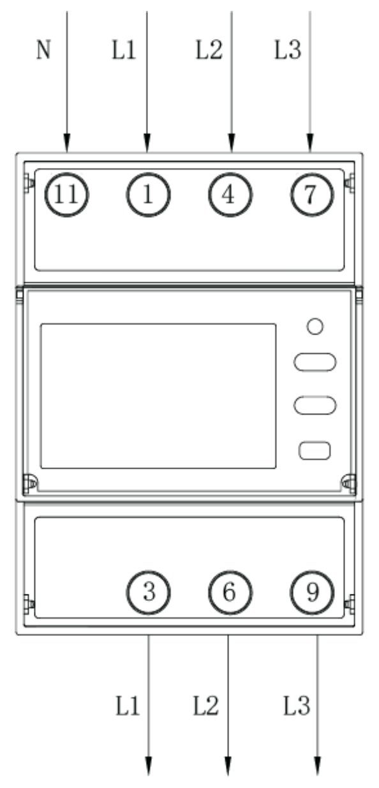
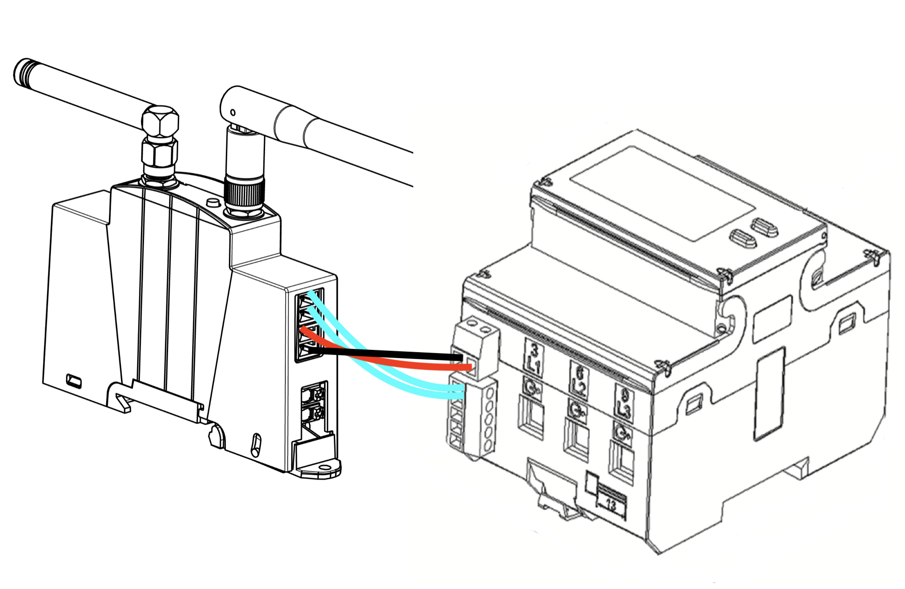
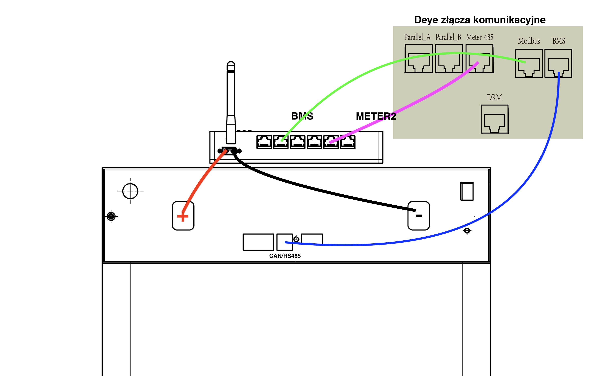
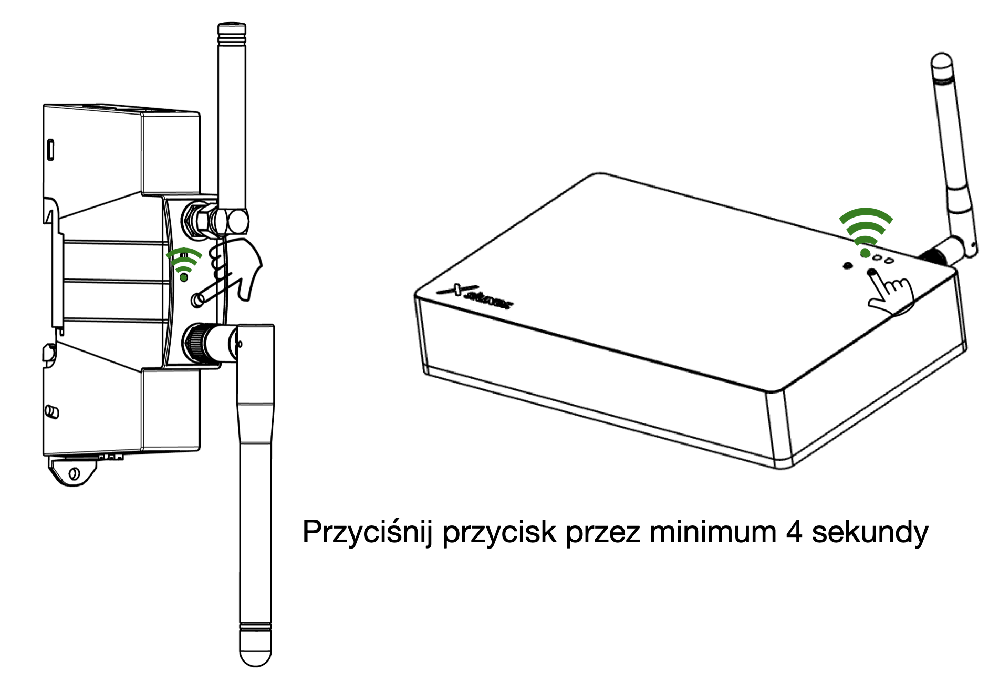
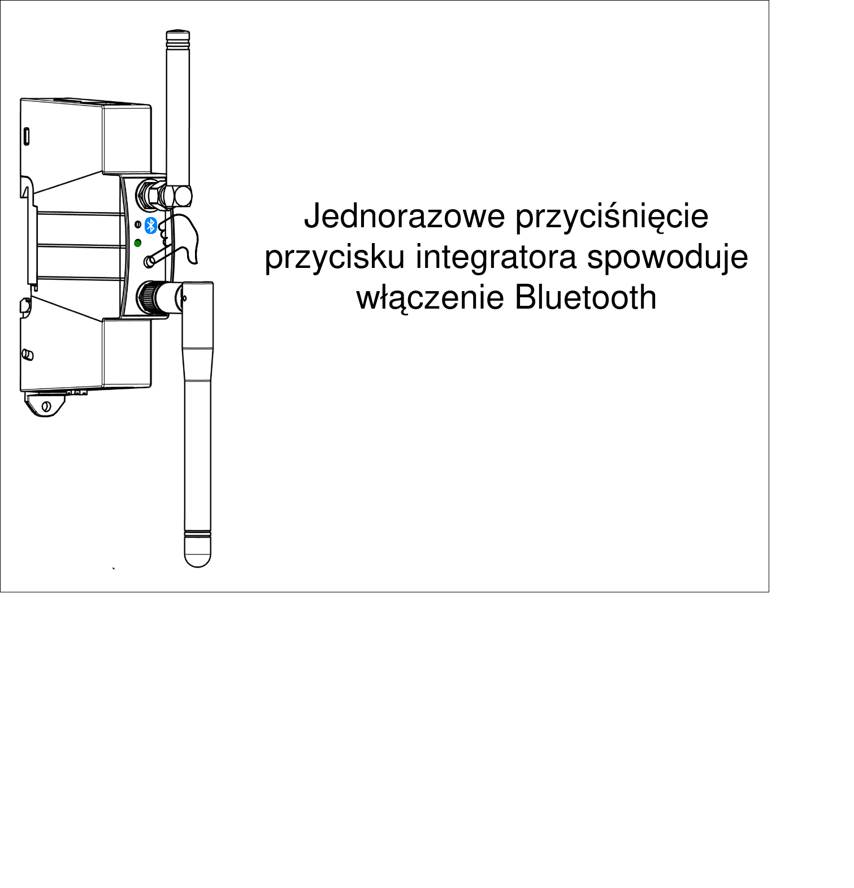
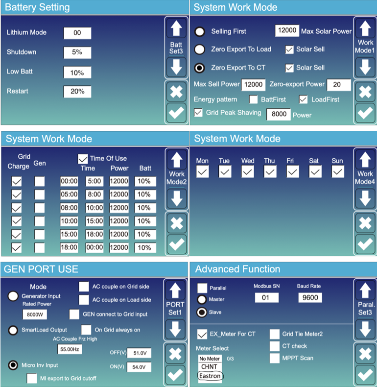
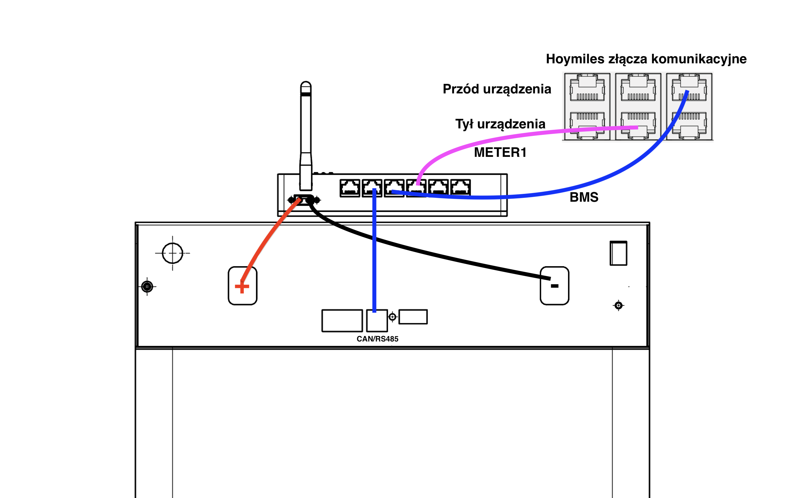

Wybierz swój inwerter.
Podłącz licznik tak, żeby był w stanie zmierzyć wszystkie odbiorniki i urządzenia wytwórze prądu znajdujące się w tej instalacji.

W zestawie znajdują się dwa przygotowane kable o kolorach biały-biały oraz czarwony-czarny. Podłącz odpowiednie wtyczki do licznika energii(pasują tylko w jednej pozycji). Następnie drugie końce kabli podłącz do modułu EMS. Zwróć uwagę, że kable pasują tutaj naprzemiennie. Pierwszym kablem z przodu musi być biały.

Zwróć uwagę na podłączenie pomiędzy modułem baterii, baterią oraz samym falownikiem. Wykorzystaj złącza w module EMS baterii opisane jako BMS oraz METER2.

Upewnij się, że wszystkie połączenia elektryczne są poprawnie wykonane oraz, że wszystkie skrętki oraz złącza RJ45 poprawnie przewodzą prąd. Włącz baterię oraz zasilanie w rozdzielni elektryczej. Przytrzymaj zaznaczone przyciski minimum 4 sekundy aż do pojawienia się migających na zielono diód. Zwiększenie częstotliwości migania diód oznacza poprawnie zakończony proces parownia.

Zainstaluj aplikację Sluxer, zaloguj się i zeskanuj kod QR z etykiety EMS. Telefon połączy się z EMS przez Bluetooth; połączenie jest szyfrowane, a dostęp daje tylko kod z etykiety tego egzemplarza. Nowe urządzenie jest widoczne od razu. Urządzenie już skonfigurowane ma Bluetooth wyłączony – krótkie naciśnięcie przycisku na EMS włącza go na 5 minut.

W aplikacji: ustaw hasło instalatora (co najmniej 8 znaków, inne niż hasła używane gdzie indziej – aplikacja nie pozwoli przejść dalej bez niego), wybierz sieć WiFi i podaj jej hasło, wybierz licznik (np. Sluxer) i uzupełnij parametry sparowanej baterii: moc, pojemność, minSoC i maxSoC.
Ustaw falownik jak na poniższych zdjęciach.

Podłącz licznik tak, żeby był w stanie zmierzyć wszystkie odbiorniki i urządzenia wytwórze prądu znajdujące się w tej instalacji.
W zestawie znajdują się dwa przygotowane kable o kolorach biały-biały oraz czarwony-czarny. Podłącz odpowiednie wtyczki do licznika energii(pasują tylko w jednej pozycji). Następnie drugie końce kabli podłącz do modułu EMS. Zwróć uwagę, że kable pasują tutaj naprzemiennie. Pierwszym kablem z przodu musi być biały.
Zwróć uwagę na podłączenie pomiędzy modułem baterii, baterią oraz samym falownikiem. Wykorzystaj złącza w module EMS baterii opisane jako BMS oraz METER1.

Upewnij się, że wszystkie połączenia elektryczne są poprawnie wykonane oraz, że wszystkie skrętki oraz złącza RJ45 poprawnie przewodzą prąd. Włącz baterię oraz zasilanie w rozdzielni elektryczej. Przytrzymaj zaznaczone przyciski minimum 4 sekundy aż do pojawienia się migających na zielono diód. Zwiększenie częstotliwości migania diód oznacza poprawnie zakończony proces parownia.
Zainstaluj aplikację Sluxer, zaloguj się i zeskanuj kod QR z etykiety EMS. Telefon połączy się z EMS przez Bluetooth; połączenie jest szyfrowane, a dostęp daje tylko kod z etykiety tego egzemplarza. Nowe urządzenie jest widoczne od razu. Urządzenie już skonfigurowane ma Bluetooth wyłączony – krótkie naciśnięcie przycisku na EMS włącza go na 5 minut.
W aplikacji: ustaw hasło instalatora (co najmniej 8 znaków, inne niż hasła używane gdzie indziej – aplikacja nie pozwoli przejść dalej bez niego), wybierz sieć WiFi i podaj jej hasło, wybierz licznik (np. Sluxer) i uzupełnij parametry sparowanej baterii: moc, pojemność, minSoC i maxSoC.
Upewnij się, że w ustawieniach falownika został włączony licznik energii z opcją "Sieć elektryczna". Sprawdź czy w ustawieniach zaawansowanych minSoC oraz maxSoC zgadzają się z ustawieniami EMS. Włącz "tryb zużycia własnego", "zarezerwowny stan naładowania" musi odpowiadać ustawieniu minSoC i minimalny poziom naładowania w EMS
Model: SLUXER EMS, typ meter. Producent: Sluxer Polska sp. z o.o., ul. Piaseczyńska 54, 00-765 Warszawa. Na etykiecie urządzenia znajdziesz model, numer seryjny (SN), datę produkcji, oznaczenia CE i WEEE oraz kod QR.
Wersję oprogramowania pokazuje aplikacja Sluxer po połączeniu z urządzeniem przez Bluetooth.
Kod QR zawiera indywidualne dane dostępowe tego egzemplarza. Nie publikuj jego zdjęcia i nie udostępniaj go osobom, które nie mają obsługiwać instalacji. Kod jest zapisany na stałe w urządzeniu i nie zmienia się po przywróceniu ustawień fabrycznych.
EMS mierzy wyłącznie wielkości elektryczne w punkcie przyłączenia do sieci (moc, napięcie, prąd, energię) i odczytuje stan falownika oraz magazynu energii. Nie ma kamery, mikrofonu ani czujników obecności. Dane o zużyciu energii mogą jednak pośrednio pokazywać, kiedy ktoś jest w domu, dlatego są przesyłane wyłącznie szyfrowanymi połączeniami. Szczegóły: polityka prywatności urządzeń i usług.
W aplikacji Sluxer sprawdź, że:
Hasło instalatora aplikacja wymusza przy pierwszej konfiguracji i prosi o potwierdzenie, że zostało zapisane. Bez niego urządzenia nie da się skonfigurować. Jeśli EMS konfigurował instalator, poproś go o przekazanie hasła – będzie potrzebne do zmian ustawień i przywrócenia ustawień fabrycznych z aplikacji.
Przywrócenie usuwa z urządzenia całą konfigurację: nazwę i hasło sieci WiFi, hasło instalatora, sparowane baterie, lokalizację, historię pomiarów i ceny. Zostaje tylko dziennik zdarzeń bezpieczeństwa (czas i rodzaj zdarzenia, bez danych osobowych).
Zawsze przywróć ustawienia fabryczne przed sprzedażą lub przekazaniem urządzenia innej osobie. Następnie usuń urządzenie ze swojego konta albo usuń konto (usuwanie konta).
Jeśli zauważysz problem z bezpieczeństwem urządzenia, aplikacji lub usług Sluxer, napisz na cyber@sluxer.com. Zasady opisuje strona Bezpieczeństwo.